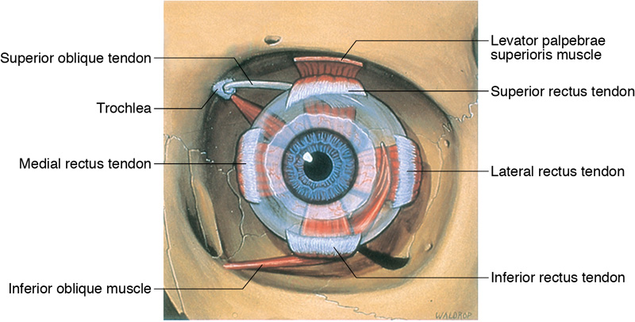
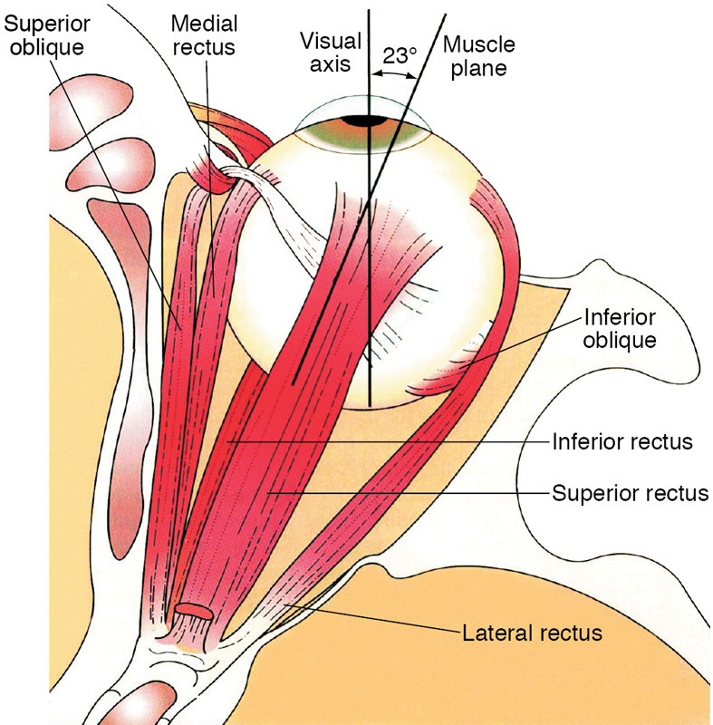
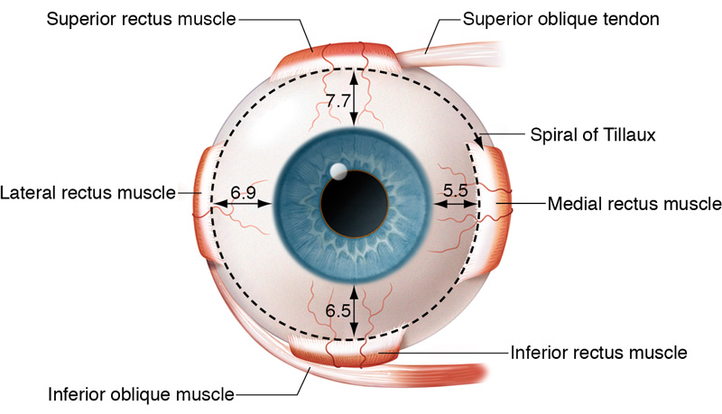
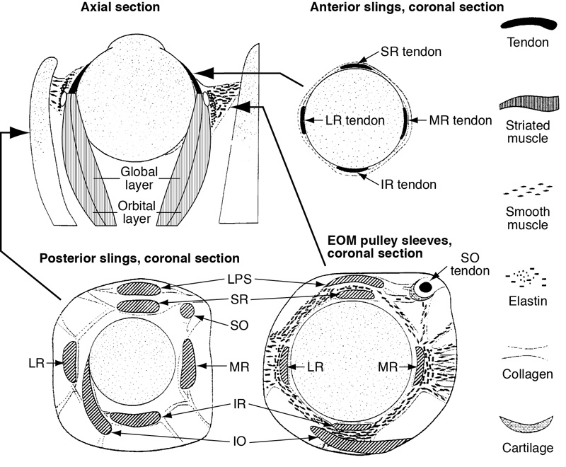
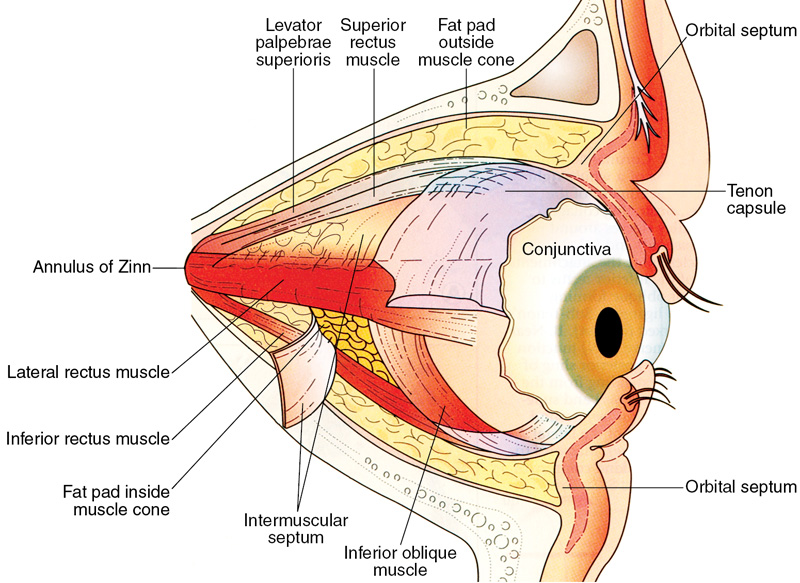
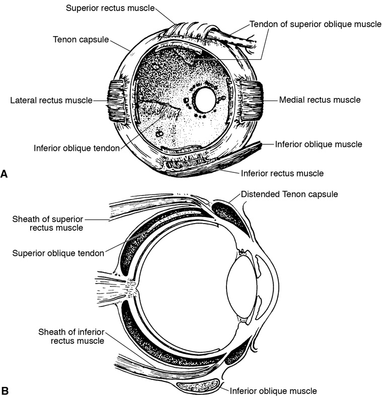
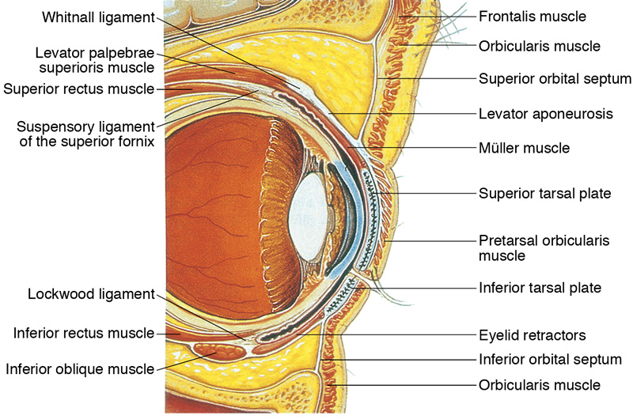

PART I
Strabismus
CHAPTER 2
Anatomy of the Extraocular Muscles
This chapter includes a related activity. Go to www.aao.org/bcscactivity_section06 or scan the QR code in the text to access this content.
Highlights
Origin, Course, Insertion, and Innervation
of the Extraocular Muscles
There are 7 extraocular muscles (EOMs): the 4 rectus muscles (lateral, medial, superior, and inferior), the 2 oblique muscles, and the levator palpebrae superioris muscle. Figure 2-1 shows an anterior view of the EOMs and their relationships to one another; these relationships can also be explored in Activity 2-1.
ACTIVITY 2-1 Extraocular muscles.
Activity developed by Mary A. O’Hara, MD.
Table 2-1 summarizes the characteristics of the EOMs; Chapter 3 in this volume describes EOM functions. BCSC Section 5, Neuro-Ophthalmology, discusses the ocular motor nerves in more detail; Section 2, Fundamentals and Principles of Ophthalmology, extensively illustrates the anatomical structures mentioned in this chapter.
Horizontal and Vertical Rectus Muscles
The horizontal and vertical rectus muscles arise from the annulus of Zinn. The horizontal rectus muscles are
The vertical rectus muscles are
The rectus muscles are thin and ribbonlike near their scleral insertions. Although it is often referred to as a tendon, the region of the muscle adjacent to the insertion consists of striated muscle fibers along with tendinous tissue.
Surgical considerations
The sclera is thinnest just posterior to the 4 rectus muscle insertions, increasing the risk of scleral perforation during small rectus muscle recessions.
Oblique Muscles
The superior oblique muscle originates from the orbital apex, above the annulus of Zinn, and passes anteriorly and upward along the superomedial wall of the orbit. The muscle becomes tendinous before passing through the trochlea, a cartilaginous saddle attached to the frontal bone in the superior nasal orbit. The combination of the trochlea and the superior oblique tendon is known as the tendon–trochlea complex.
The trochlea functions as a pulley, redirecting the tendon inferiorly, posteriorly, and laterally; the tendon forms an angle of 51° with the visual axis or midplane of the eye in primary position (see Chapter 3, Fig 3-5). The tendon emerges from the Tenon capsule 2 mm nasally and 5 mm posteriorly to the nasal insertion of the superior rectus muscle. Passing under the superior rectus muscle, the tendon inserts posterior to the equator in the superotemporal quadrant of the eyeball, almost or entirely laterally to the midvertical plane or center of rotation (see Chapter 3, Fig 3-5). With its functional origin anterior to the equator and its insertion posterior to the equator, the superior oblique muscle’s contribution to vertical eye movement is to depress the eye by pulling the back of the eye upward.
The inferior oblique muscle originates inferonasally from the periosteum of the maxillary bone, just posterior to the orbital rim and lateral to the orifice of the lacrimal fossa. It courses laterally, superiorly, and posteriorly, going inferior to the inferior rectus muscle and inserting under the lateral rectus muscle in the posterolateral portion of the globe, in the area of the macula. Like the superior oblique muscle, the inferior oblique muscle forms an angle of 51° with the visual axis or midplane of the eye in primary position. The vertical action of the inferior oblique muscle is to elevate the eye by pulling the back of the eye downward (see Chapter 3, Fig 3-5). Most inferior oblique muscles have a single belly, but approximately 10% have 2 parallel bellies (or, even more rarely, 3).
Surgical considerations
Surgery on the inferior oblique muscle requires careful inspection of the inferolateral quadrant to ensure that all muscle bellies are identified; otherwise, the action of the muscle may not be sufficiently altered, and additional surgery may be required.
Levator Palpebrae Superioris Muscle
The levator palpebrae superioris muscle arises at the orbital apex from the lesser wing of the sphenoid bone, just superior to the annulus of Zinn. At its origin, the muscle blends with the superior rectus muscle inferiorly and with the superior oblique muscle medially. The levator palpebrae superioris passes anteriorly, lying just above the superior rectus muscle; the fascial sheaths of these 2 muscles are connected. The levator palpebrae superioris muscle becomes an aponeurosis in the region of the superior fornix. This muscle has both a cutaneous and a tarsal insertion. See BCSC Section 7, Oculofacial Plastic and Orbital Surgery, for additional information.
Relationship of the Rectus Muscle Insertions
Starting at the medial rectus and proceeding to the inferior rectus, lateral rectus, and superior rectus muscles, the rectus muscles insert progressively farther from the limbus. Drawing a continuous curve through these insertions yields a spiral, known as the spiral of Tillaux (Fig 2-3). The temporal side of each vertical rectus muscle insertion is farther from the limbus (ie, more posterior) than is the nasal side.
Innervation of Extraocular Muscles
Cranial nerve (CN) VI (abducens) innervates the lateral rectus muscle; CN IV (trochlear), the superior oblique muscle; and CN III (oculomotor), the levator palpebrae superioris, superior rectus, medial rectus, inferior rectus, and inferior oblique muscles. Cranial nerve III has an upper and a lower division: the upper division supplies the levator palpebrae superioris and superior rectus muscles, and the lower division supplies the medial rectus, inferior rectus, and inferior oblique muscles. The parasympathetic innervation of the sphincter pupillae (responsible for pupil constriction) and ciliary muscle (responsible for accommodation) travels with the branch of the lower division of CN III that supplies the inferior oblique muscle.
The nerve supplying the inferior oblique muscle enters the lateral portion of the muscle, where it crosses the inferior rectus muscle. The nerves to the rectus muscles and the superior oblique muscle enter the muscles approximately one-third of the distance from the origin to the insertion (or trochlea, in the case of the superior oblique muscle).
Surgical considerations
Surgery on the inferior oblique muscle can damage its nerve or the accompanying parasympathetic fibers and can result in an enlarged or tonic pupil. Injury to the nerve of a rectus muscle is less likely but may occur if an instrument is thrust more than 26 mm posterior to a rectus muscle’s insertion.
Orbital and Fascial Relationships
Within the orbit, a complex musculofibroelastic structure suspends the globe, supports the EOMs, and compartmentalizes the fat pads (Figs 2-4, 2-5).
Surgical Considerations
Connective tissue abnormalities can result in strabismus; examples include connective tissue entrapment in blowout fractures and extraocular muscle pulley heterotopy.
Adipose Tissue
The eye is supported and cushioned within the orbit by a large amount of fatty tissue. External to the muscle cone, fatty tissue ends about 10 mm from the limbus. Fatty tissue is also present inside the muscle cone, separated from the sclera by the Tenon capsule (see Fig 2-5).
Surgical considerations
During strabismus surgery, special care must be taken to avoid violating the integrity of the Tenon capsule 10 mm or more posterior to the limbus. If this occurs, fatty tissue prolapsing through the capsule can form a restrictive adhesion to sclera, muscle, intermuscular septum, or conjunctiva, limiting ocular motility.
Muscle Cone
The muscle cone lies posterior to the equator and consists of the EOMs, their sheaths, and the intermuscular septum. The posterior intermuscular septum separates the intraconal and extraconal fat pads (see Fig 2-5).
Surgical considerations
CN IV is outside the muscle cone and is usually not affected by a retrobulbar block. However, any EOM could be reached by a retrobulbar needle and injured by injection of local anesthetic.
Muscle Capsule
Each rectus muscle has a surrounding fascial capsule that extends with the muscle from its origin to its insertion. These capsules are thin posteriorly, but near the equator they thicken as they pass through the sleeve of the Tenon capsule in the region of the EOM pulleys (see the section The Pulley System), continuing anteriorly with the muscles to their insertions. Anterior to the equator, between the undersurface of the muscle and the sclera, there is almost no fascia, only connective tissue footplates that connect the muscle to the globe. The smooth, avascular surface of the muscle capsule allows the muscles to slide easily over the globe.
Surgical considerations
Maintaining the integrity of the muscle capsules during surgery reduces intraoperative bleeding and provides a smooth muscle surface with less risk of adhesion formation. When suturing a muscle within its capsule, it is important to secure the muscle fibers themselves; if only the muscle capsule is sutured to the globe, the muscle can retract backward, resulting in a slipped muscle.
The Tenon Capsule and Intermuscular Septum
The Tenon capsule (fascia bulbi) is the principal orbital fascia and forms the envelope within which the eyeball moves (Fig 2-6). The Tenon capsule fuses posteriorly with the optic nerve sheath and anteriorly with the intermuscular septum, merging with conjunctiva and sclera 3 mm from the limbus. The portion of the Tenon capsule posterior to the globe is thin and flexible, enabling free movement of the optic nerve, ciliary nerves, and ciliary vessels as the globe rotates, while separating the orbital fat inside the muscle cone from the sclera. At and just posterior to the equator, the Tenon capsule is thick and tough, suspending the globe like a trampoline by means of connections to the periorbital tissues. The global layer of the 4 rectus muscles penetrates this thick fibroelastic tissue approximately 10 mm posterior to their insertions. The oblique muscles penetrate the Tenon capsule anterior to the equator. The Tenon capsule continues forward over these 6 EOMs and separates them from the orbital fat and structures lying outside the muscle cone.
Surgical considerations
The intermuscular septum (especially between the rectus and oblique muscles) is a useful point of reference when trying to locate a muscle that has been “lost” during surgery or as a result of trauma. Extensive dissection of the intermuscular septum is not necessary for rectus muscle recession surgery, but during resection surgery, dissection helps prevent excessive advancement of connective tissue with the muscle. The connective tissues of the Tenon capsule and intermuscular septum thin with age; as a result, less dissection is required during strabismus surgery in adults than in children.
The Pulley System
The superior oblique muscle is the EOM whose mechanical action is most obviously redirected through an anatomical pulley at the trochlea; however, orbital connective tissues form fibroelastic pulley-like structures around all other EOMs as well. These pulleys, which consist of collagen, elastin, and smooth muscle, are located near the equator, where the muscles pass through connective tissue sleeves to penetrate the Tenon capsule. Dynamic magnetic resonance imaging (MRI) studies show that, in some cases, the pulleys act mechanically as the rectus muscle origins. The pulleys may also serve to stabilize the path of the posterior EOMs relative to the orbit, preventing sideslipping or movement perpendicular to the muscle axis (see Fig 2-4). Numerous extensions from the EOM sheaths attach to the orbit and help support the muscles and the globe.
The inferior oblique muscle originates near the orbital rim and enters its connective tissue pulley inferior to the inferior rectus muscle, where the oblique muscle penetrates the Tenon capsule. The inferior oblique pulley and inferior rectus pulley join to form the Lockwood ligament (Fig 2-7), to which a dense neurofibrovascular bundle running along the lateral border of the inferior rectus muscle is attached; this bundle contains the inferior oblique motor nerve (see Chapter 13, Fig 13-1). This complex acts mechanically as the functional origin of the inferior oblique muscle.
EOMs (other than the levator palpebrae superioris) exhibit a distinct 2-layer organization: an outer orbital layer, which acts only on connective tissue pulleys, and an inner global layer, which inserts on the sclera to move the globe (see Fig 2-4). The active pulley hypothesis proposes that a pulley’s position can be shifted by contraction of the orbital layer. This concept remains controversial; whether there is actual innervational control of the pulleys is still debated. Normal pulleys shift only slightly in the coronal plane, even during large eye movements; however, high-resolution MRI scans indicate that the pulleys are located only a short distance from the globe center, so that even small shifts in pulley position could have a large impact on EOM pulling direction.
Heterotopy (malpositioning) of the rectus pulleys may cause some cases of incomitant strabismus and A or V patterns (see Chapter 9); these anomalies can mimic oblique muscle dysfunction by misdirecting the forces of the rectus muscles. Bony abnormalities, such as those seen in association with craniosynostosis, can also alter the direction of pull of rectus muscles by causing malpositioning of the pulleys. Age-related connective tissue laxity may result in acquired pulley heterotopy and associated strabismus, such as sagging eye syndrome and adult-onset distance esotropia.
Peragallo JH, Pineles SL, Demer JL. Recent advances clarifying the etiologies of strabismus. J Neuroophthalmol. 2015;35(2):185–193.
Other Connective Tissue Attachments of Rectus Muscles
The inferior rectus muscle is bound to the lower eyelid by the fascial extension from its sheath (see Fig 2-7). The superior rectus muscle is more loosely bound to the levator palpebrae superioris muscle.
Surgical considerations
Resection of the inferior rectus muscle tends to narrow the fissure by elevating the lower eyelid. Recession of the inferior rectus muscle tends to widen the palpebral fissure, resulting in lower eyelid retraction. Resection of the superior rectus muscle may pull the eyelid downward, narrowing the palpebral fissure, but moderate recession of this muscle does not usually cause upper eyelid retraction. In hypotropia, a pseudoptosis may be present because the upper eyelid tends to follow the superior rectus muscle.
There is a connective tissue frenulum connecting the lateral rectus muscle to the underlying inferior oblique at its insertion, and a similar one connecting the superior rectus to the underlying superior oblique tendon. During recession or resection of the lateral rectus muscle or superior rectus muscle, severing the connective tissue attachments to the adjacent oblique muscle helps prevent unintended consequences, such as the inferior oblique muscle being advanced with the lateral rectus muscle.
The medial rectus is the only rectus muscle that does not have an oblique muscle running tangential to it. This makes surgery on the medial rectus less complicated but means that there is neither a point of reference if the surgeon becomes disoriented nor a point of attachment if the muscle is lost.
Blood Supply of the Extraocular Muscles
Arterial System
Branches of the ophthalmic artery provide the most important blood supply to the EOMs. The lateral muscular branch supplies the lateral rectus, superior rectus, and superior oblique muscles; the medial muscular branch, the larger of the 2 muscular branches, supplies the inferior rectus, medial rectus, and inferior oblique muscles. The lacrimal artery partially supplies the lateral rectus muscle. Various branches of the ophthalmic artery supply the levator palpebrae superioris muscle. In addition, a branch of the maxillary artery, the infraorbital artery, also partially supplies the inferior oblique and inferior rectus muscles.
The muscular branches give rise to the anterior ciliary arteries accompanying the rectus muscles; each rectus muscle has 1–4 anterior ciliary arteries. These arteries pass through the episclera of the globe and supply blood to the anterior segment (almost all of the temporal half of the anterior segment circulation and most of the nasal half of the anterior segment circulation). Through anastomoses in the perilimbal region, conjunctival vessels may also contribute to the blood supply of the anterior segment. The commonly held notion that the lateral rectus has fewer ciliary vessels than the other rectus muscles has been challenged by anatomical studies showing that the number of ciliary vessels is similar for the lateral rectus and other rectus muscles.
Johnson MS, Christiansen SP, Rath PP, et al. Anterior ciliary circulation from the horizontal rectus muscles. Strabismus. 2009;17(1):45–48.
Surgical considerations
Simultaneous surgery on 3 rectus muscles may induce anterior segment ischemia, particularly in older or vasculopathic patients.
Venous System
The venous system parallels the arterial system, emptying into the superior and inferior orbital veins. Generally, 4 or more vortex veins are located posterior to the equator; these are often found near the nasal and temporal margins of the superior rectus and inferior rectus muscles. Although the number and position of the vortex veins vary, the location of 2 of them in the orbit is consistent: the inferotemporal quadrant, just posterior to the inferior oblique muscle; and the superotemporal quadrant, just posterior to the superior oblique tendon.
Surgical considerations
When surgery is performed near the vortex veins, accidental severing of a vein is possible, especially during recession or resection of the inferior rectus or superior rectus muscle, weakening of the inferior oblique muscle, or exposure of the superior oblique muscle tendon. Hemostasis can be achieved with cautery or with an absorbable hemostatic sponge.
Structure of the Extraocular Muscles
The important functional characteristics of muscle fibers are contraction speed and fatigue resistance. The eye muscles participate in motor acts that are among the fastest in the human body (saccadic eye movements) and also among the most sustained (gaze fixation and vergence movements). Like skeletal muscle, EOM is voluntary striated muscle. However, EOM differs from typical skeletal muscle. In the EOMs, the ratio of nerve fibers to muscle fibers is very high (1:3 –1:5)—up to 10 times higher than the ratio of nerve axons to muscle fibers in skeletal muscle. This high ratio may enable accurate eye movements that are controlled by an array of systems ranging from the primitive vestibular-ocular reflex to highly evolved vergence movements.
The muscle fibers can be either singly or multiply innervated. Singly innervated fibers are fast-twitch generating. Approximately 90% and 80% of the fibers are singly innervated in the global and orbital layers, respectively. The global singly innervated muscle fibers include 3 types (red, intermediate, and white), defined by mitochondrial content. The red fibers are the most fatigue resistant and the white fibers are the least. The orbital singly innervated fibers all have high mitochondrial content and high fatigue resistance; they are considered the major contributor to sustained EOM force in primary and deviated positions. This muscle fiber type is the most affected by denervation from damage to the motor nerves or the end plates, as occurs after botulinum toxin injection.
The function of the multiply innervated fibers of the orbital and global layers is not clear. These fibers are not seen in the levator palpebrae superioris. They are thought to be involved in the finer control of fixation and in smooth and finely graded eye movements, particularly vergence control.
Compartmentalization of Extraocular Muscles
There is evidence for compartmentalization of rectus muscle innervation. Studies in primates and humans have shown distinct superior and inferior zones of innervation within horizontal rectus muscles. Segregation of innervational input may explain why some abducens nerve injuries affect the superior portion of the muscle more than the inferior portion, with associated small vertical deviations.
Demer JL. Compartmentalization of extraocular muscle function. Eye (Lond). 2015;29(2): 157–162.

Figure 2-1 Extraocular muscles, frontal composite view, left eye. (Reproduced with permission from Dutton JJ. Atlas of Clinical and Surgical Orbital Anatomy. Saunders; 1994:23.)
|
Table 2-1 Extraocular Muscles |
||||||||||||
|
Muscle |
Approx. Length of Active Muscle (mm) |
Origin |
Anatomical Insertion and Distance From Limbus (mm) |
Direction of Pull |
Arc of Contact (mm) |
Innervation |
||||||
|
Medial rectus (MR) |
40 |
Annulus of Zinn |
Up to 5.5 mm from medial limbus |
90º |
7.0 |
Lower CN III |
||||||
|
Lateral rectus (LR) |
40 |
Annulus of Zinn |
Up to 6.9 mm from lateral limbus |
90º |
12.0 |
CN VI |
||||||
|
Superior rectus (SR) |
40 |
Annulus of Zinn |
Up to 7.7 mm from superior limbus |
23º |
6.5 |
Upper CN III |
||||||
|
Inferior rectus (IR) |
40 |
Annulus of Zinn |
Up to 6.5 mm from inferior limbus |
23º |
6.5 |
Lower CN III |
||||||
|
Superior oblique (SO) |
32 |
Orbital apex, above annulus of Zinn (functional origin at the trochlea) |
Posterior to equator in superotemporal quadrant |
51º |
7– 8 |
CN IV |
||||||
|
Inferior oblique (IO) |
37 |
Behind inferior orbital rim, lateral to lacrimal fossa |
Lateral to area of macula |
51º |
15.0 |
Lower CN III |
||||||
|
Levator palpebrae superioris (LPS) |
40 |
Orbital apex, above annulus of Zinn |
Septa of pretarsal orbicularis and anterior surface of tarsus |
— |
— |
Upper CN III |
||||||
|
CN = cranial nerve. See also Chapter 3, Figures 3 -3 through 3 -5. |
||||||||||||

Figure 2-2 The extrinsic muscles of the right eyeball in primary position, seen from above. Note that only the origin and insertion of the inferior oblique muscle are visible in this view. (Modified with permission from Yanoff M, Duker J, eds. Ophthalmology. 2nd ed. Mosby; 2004:549.)

Figure 2-3 Spiral of Tillaux, right eye. Note: The insertion distances, given in millimeters, are maximum values. Insertion distances vary among individuals. (Illustration by Christine Gralapp.)

Figure 2-4 Structure of orbital connective tissues. EOM = extraocular muscle; IO = inferior oblique; IR = inferior rectus; LPS = levator palpebrae superioris; LR = lateral rectus; MR = medial rectus; SO = superior oblique; SR = superior rectus. The 3 coronal views represent cross sections at the levels indicated by arrows in axial section. (Reprinted with permission from SLACK Incorporated. Modified with permission from Demer JL, Miller JM, Poukens V. Surgical implications of the rectus extraocular muscle pulleys. J Pediatr Ophthalmol Strabismus. 1996;33(4):208–218.)

Figure 2-5 The muscle cone contains 1 fat pad and is surrounded by another; these 2 fat pads are separated by the rectus muscles and intermuscular septum. Note that the intermuscular septum does not extend all the way back to the apex of the orbit. (Modified with permission from Yanoff M, Duker J, eds. Ophthalmology. 2nd ed. Mosby; 2004:553.)

Figure 2-6 The Tenon capsule. A, Anterior and posterior orifices of the Tenon capsule shown after enucleation of the globe. B, The Tenon space shown by injection with India ink. (Modified from Charpy A. Muscles et capsule de Tenon. In: Poirier P, Charpy A, eds. Traité d’Anatomie Humaine; vol 5, no 2. Masson; 1912:539.)

Figure 2-7 Attachments of the upper and lower eyelids to the vertical rectus muscles (Modified with permission from Buckley EG, Freedman S, Shields MB, eds. Atlas of Ophthalmic Surgery, vol III: Strabismus and Glaucoma. Mosby Year Book; 1995:15.)